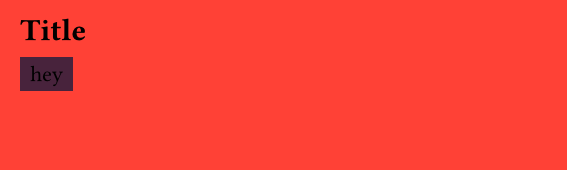

PDF accessibility
Accessibility of a PDF measures how well people with disabilities can access the content of the file. In practice, this means that assistive technology (AT) software can correctly extract the information, order, and layout of the document. This is required because what most people see can be very different from what the AT software will "translate".
Standards¶
There are many PDF standards, depending on the desired level of accessibility and the goal. For example, a PDF/A-1 document focuses on long-term preservation, and PDF/UA-1 focuses on universal access (e.g., accessibility).
You can find an exhaustive list of these standards and their definitions on the PDF Association website.
Accessibility in Typst¶
Fortunately, since Typst 0.14.0 (October 2025), Typst lets you choose which conformance level you want, except for PDF/UA-2, since it's the most recent one (but it probably will at some point).
If you're unsure which standard you need to use and want to make sure your PDFs are accessible (you should!), then use the PDF/UA-1 standard. It ensures a great level of accessibility and will help ensure your document is accessible.
How to make accessible PDFs¶
A PDF document that respects the PDF/UA-1 standard will be tagged as such in the file itself. But Typst will tag the PDF as PDF/UA-1 only if it truly qualifies, which does not depend only on the validity of your Typst code.
Let's take an example:
What could be wrong here? If we try to compile that file as a PDF/UA-1 document:
It fails with:
error: PDF/UA-1 error: the first heading must be of level 1
┌─ file.typ:1:0
│
1 │ == Title
│ ^^^^^^^^
Because an accessible PDF must always start with a level 1 heading rather than a level 2 heading, the Typst compiler raises an error. This means that, even if our Typst code is valid, it will fail to compile.
Important
There are other similar rules that you need to follow to ensure accessibility and avoid failing to render at runtime.
Rules to follow¶
- Alternative text. This is a sentence meant to describe the image, removing the need to actually see it.
- No links in header/footer. This is required because everything inside the header and footer is considered an artifact. Artifacts are content meant only to be decorative, and they shouldn't contain useful information (e.g., links). Learn more here.
- Heading level hierarchy. The heading levels used must be consistent: start with 1, then 2, then 3, and so on.
- Set a document title. Your document must have a title.
Also note that many other things will not be directly flagged as accessibility issues, but actually are. For example, this is considered valid by Typst:
#set document("Title of the document")
#set page(fill: red, width: 10cm, height: 3cm)
= Title
#rect(fill: rgb("#48233C"), text(fill: black, "hey"))

But there is a color issue: the contrast between the text color and the background color is not high enough. This means that the PDF is flagged as fully accessible even though it is not. The main thing to keep in mind is that you still need to do some manual checks to ensure true accessibility.
Measuring accessibility¶
Even if Typst does some checking before compiling the document, you might want to use a PDF accessibility checker.
The recommended option is veraPDF, which will inspect your PDF and return detailed output about what's wrong (in formats such as XML or JSON). If you're an R user, you should check pdfcheck, which is a veraPDF wrapper that makes it easier to check accessibility.